信息理论
~~高级的概率论与数理统计~~
信息的定义
-
信息是一种用来消除不确定性的东西
-
信息来源于物质，但不等于物质
-
信息必须有一个载体，信息是载体的内容
-
信息的度量 (离散)
\(I(A) = -\log_2 P(A)\)
-
信息的度量单位是比特（bit），正对应于当前的计算机系统 (以e为底则称为奈特nat)
-
香农信息量相当于将信息论和概率论联系起来、
-
概率越小，信息量越大
-
非负数
-
可加性
-
事件的自信息
-
事件的自信息的本质
-
事件发生后所提供的信息量
-
事件发生前为确证事件发生的不确定性所需要的信息量
-
-
条件自信息的本质
-
事件Y发生后，X再发生需要的“新的信息量”
-
事件Y发生后，X又发生了，提供给观察者的“新的信息量”
-
事件的互信息(Mutual Infomation)
-
\(I(x ; y ) = I(x) - I(x | y)= -log P(x) - ( - log P(x | y) ) = log \frac{P(x, y)}{P(x)P(y)}\)
-
单一事件y发生后对事件x的不确定性减少的程度(有点像衡量两事件的相关性，可能为正、负、0)
也就是
已知 y 发生的情况下，x 发生带来的不确定性
不知道 y 是否发生的情况下，x 发生带来的不确定性
之差
-
对称性：\(I(x ; y ) = I(y ; x )\)
-
链式法则：\(I(x ; (y, z) ) = I(x) - I(x | (y,z) ) = I(x ; y ) + I((x ; z) | y )\)
(事件y , z 给 事件 x 带来的信息量 = 事件 y 给事件 x 带来的信息量 + y已知的条件下事件 z 给事件 x 额外带来的信息量)
熵
-
\(H(X) = \sum P(x_i) I(x_i) = - \sum P(x_i) \log P(x_i)\)
-
熵定义为随机变量各个事件的平均自信息，也就是随机变量的不确定性
-
熵针对随机变量，自信息针对的是具体事件（随机变量取值）
-
条件熵
-
单一事件的条件熵 即 简单地替换对应的p(x)为p(x|y)
\[ H(X|y) = - \sum_{x_i} P(x_i|y) \log P(x_i|y) \] -
随机变量的条件熵，定义为对条件随机变量的熵的期望，本质是随机变量Y确定后随机变量X还剩下的不确定度，理解上可以参考条件数学期望的定义
\[ H(X|Y) = \sum_{y_i} P(y_i) H(X|y_i) = - \sum_{x_i} \sum_{yj} P(x_i,y_j) \log P(x_i|y_j) \]
-
-
联合熵的链式法则：\(H(X, Y) = H(X) + H(Y | X)\)
-
特殊的，X,Y统计独立时，\(H(X, Y) = H(X) + H(Y)\)
-
多变量，\(H(X_1, X_2, \cdots, X_n) = \sum H(X_i | X_1, X_2, \cdots, X_{i-1})\)
-
-
熵的性质
-
本质上是K维概率空间上向量的函数
-
基本简单性质
-
非负性：\(H(X) \ge 0\)
-
确定性：当且仅当X是确定性的随机变量时，\(H(X) = 0\)
-
可扩展性：维度扩展
-
-
可加性
-
即上面的联合熵的链式法则推广
-
证明:

\(H(X_1,X_2) = H(X_2) + H(X_1 | X_2) = H(X_2)\) (\(X_2\)确定后，\(X_1\)也确定了，所以\(H(X_1 | X_2) = 0\))
\(H(X_1,X_2) = H(X_1) + H(X_2 | X_1)\)
两式相等，所以 \(H(X_2) = H(X_1) + H(X_2 | X_1)\)
-
-
极值性
- \(H_K(p_1,p_2, \cdots p_K) \leq H_K(\frac{1}{K},\frac{1}{K}, \cdots \frac{1}{K}) = log K\)
-
条件熵 <= 熵
-
\(H(X|Y) \leq H(X)\)
-
\(H(X|y) <> H(x)\)
-
-
凸函数性质
-
熵是定义在凸集上的上凸函数
-
凸函数性质：
-
Hessian矩阵正定/负定
-
Jensen不等式成立
\(\Sigma \theta_i f(x_i) \leq f(\Sigma \theta_i x_i)\)
-
-
-
\(H(\theta \alpha + (1-\theta) \beta) \geq \theta H(\alpha) + (1-\theta) H(\beta), \theta \in [0,1]\)
-
-
互信息 与 熵
-
\(I(x, y) = I(x) - I(x | y) = -log \frac{p(x)p(y)}{p(x,y)}\)
-
\(I(X;Y) = E(I(x,y)) = H(X) - H(X|Y) = H(Y) - H(Y|X) = H(X) + H(Y) - H(X,Y)\)
-
互信息等于事件Y（整个随机变量，有多种结果）发生后对事件X的不确定性减少的程度

-
数学上说，I(X;Y) 是输入的分布矢量 和 转移概率矩阵 的信息函数
-
互信息的凸性
-
-
-
相对熵（KL散度）
-
\(D(p||q) = \sum p(x) \log \frac{p(x)}{q(x)} = E_p(\log \frac{p(x)}{q(x)})\)
-
性质：
-
非负性
-
不对称性
-
与互信息的关系
\(I(X;Y) = D(p(x,y)||p(x)p(y))\)
-
与熵的关系
\(H(x) = H(U) - D(X||U)\) （U为均匀分布）
-
“链式”法则（P=P1P2相互独立, Q=Q1Q2相互独立）
\(D(P||Q) = D(P1||Q1) + D(P2||Q2)\)
-
-
-
疑义
-
\(X \in \{x_0, x_1, ... x_{n-1}\}\)为真实变量，\(\hat X\)为估计变量，使用\(\hat X\)来估计\(X\)
-
疑义度定义：
\[ P_E = \Sigma_{k=0}^{n-1} \Sigma_{i=0}^{n-1} P(X = k, \hat X = i) (i \neq k) \] -
Fano 不等式
\[ H(P_E) + P_E \log(n-1) \geq H(X| \hat X) \]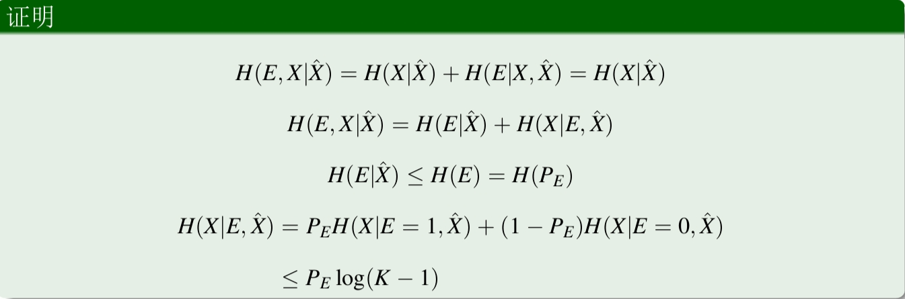
-
马尔可夫链
-
马尔可夫链的定义
-
一个随机过程，具有马尔可夫性质
-
马尔可夫性质：\(P(X_{n+1} | X_1, X_2, \cdots, X_n) = P(X_{n+1} | X_n)\)
-
数据处理定理：增加数据处理次数，不会增加数据量
\[ X -> Y -> Z \]\[ I(X;Y) \geq I(X;Z) \]\[ I(X;Y) \geq I(X;Y|Z) \] -
互信息的凸性
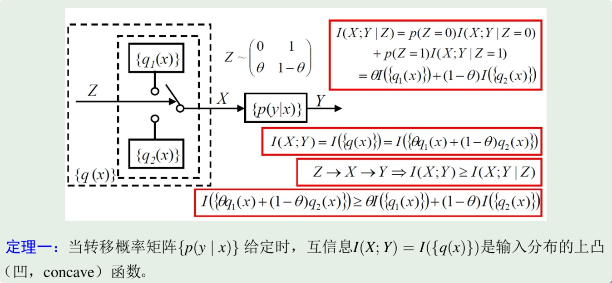
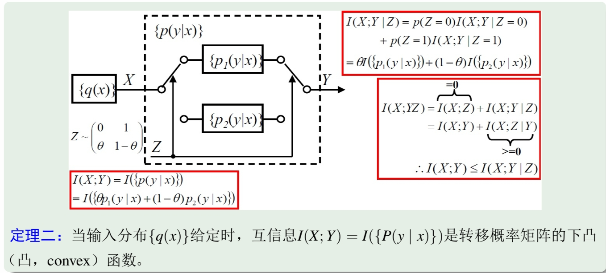
-
信息的度量（连续）
求和 --> 积分
-
互信息
\[ I(X;Y) = \int \int p(x,y) \log \frac{p(x,y)}{p(x)p(y)} dx dy \]-
二维正态变量的互信息
\[ I(X;Y) = - \frac{1}{2} \log (1-\rho^2) \]
-
-
微分熵
\[ H_c(X) = - \int p(x) \log p(x) dx \]-
一些说明：
-
微分熵实际上不是连续变量的不确定度，因为那个一般是无穷大
-
微分熵是一种保证前面离散变量性质的”龟腚“，实际可正可负
-
微分熵不具有线性不变性
-
-
峰值性
-
取值一定时，均匀分布的微分熵最大，为 \(H_c(X) = \ln L\)
-
方差一定时，高斯分布的微分熵最大，为 \(H_c(X) = \ln (\sqrt{2 \pi e} \sigma)\)
-
-
熵功率的定义
\[ \bar \sigma_x^2 = \frac{1}{2 \pi e} e^{2 H_c(X)} \]此时高斯分布的熵功率恰为\(\sigma^2\)
-
平稳离散信源
- 平稳随机过程
连续T时间段内的概率分布是相同的
\(E(X_t) = E(X_{t+k}) = E(X_0) = Const.\)
-
离散信源
-
平稳信源
\[ P(x_1, x_2, \cdots, x_n) = P(x_{1+k}, x_{2+k}, \cdots, x_{n+k}) \] -
简单无记忆信源
\[ P(x_1, x_2, \cdots, x_n) = P(x_1)P(x_2) \cdots P(x_n) \] -
m阶马尔可夫信源
\[ P(x_1, x_2, \cdots, x_n) = P(x_1)P(x_2|x_1) \cdots P(x_n|x_{n-1}, \cdots, x_{n-m}) \]
-
-
平稳信源的熵
-
\(H = - \sum P(\vec{X}) \log P(\vec{X})\) (会趋近于无穷大)
-
平均每符号熵 \(H_n(X) = \frac{H(X)}{n}\)
-
熵速率\(H = \lim_{n \to \infty} H_n\)
-
性质
-
$H(X_N | X_{N-1}, \cdots, X_1) $单调不增
-
\(H_N(X)\)单调不增
-
\(H_N(X) \geq H(X_N | X_{N-1}, \cdots, X_1) \to \lim_{n \to \infty} H(X_N|X_{N-1}X_{N-2}\cdots X_1)\)
-
-
-
熵的相对率
- \(\eta = \frac{H}{\log n}\)
-
信源的冗余度
- \(R = 1 - \eta\)
-
马尔可夫源的熵率
-
\[ H_{\infty} = \lim_{n \to \infty} H_n = H(X | S) = \sum_{s_i \in K^m} P(s_i) H(X | S = s_i) \]
-
信息论 & 通信
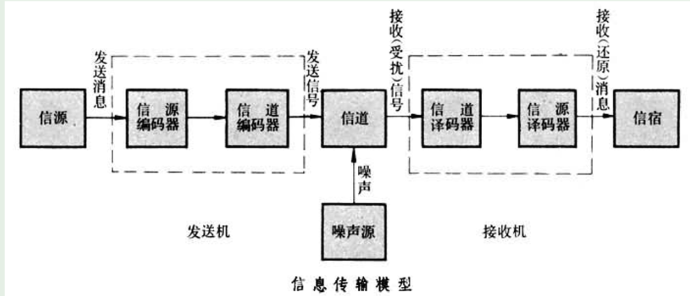
核心
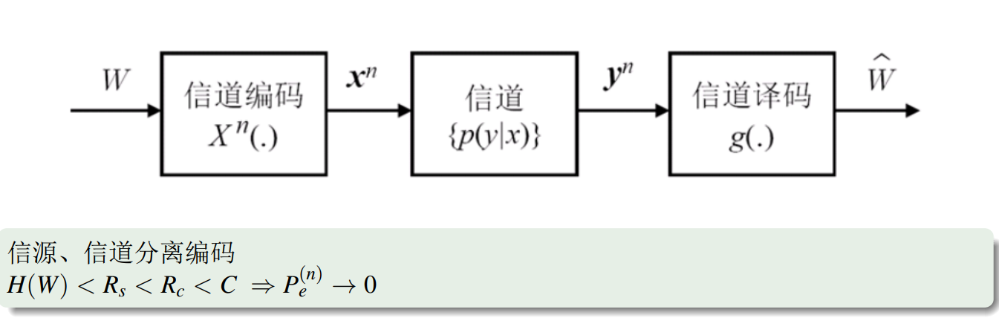
信源编码
在代价最小(最小的比特数)的意义上来最有效地表示一个信源
-
等长编码
- 比较好理解，对于所有可能输入的\(K^L\)字段都分配一个等长的编码，因此有 \(D^N \geq K^L\)，即 \(N\geq \frac{L log K}{log D}\)
-
香农编码定理(渐进无损压缩的极限)
\(N = \frac{LH(U)}{log D}\)
-
\(L \to \infty,\frac{I(u^L)}{L} \to H(U)\)
-
利用典型列（大数定律型）进行直观证明(不严格)
-
由切比雪夫不等式，可严格证明
- \(2^{-n(H-\epsilon)} \leq P(\vec{X}) \leq 2^{-n(H+\epsilon)}\)
-
-
不等长编码
\(\bar L = \sum n_k p_k\)
不等长编码定理：
\[\exists\bar{L}_{best}, \ \frac{H(U)}{logD} \leq \bar{L} \leq \frac{H(U)}{logD} + 1\]证明：
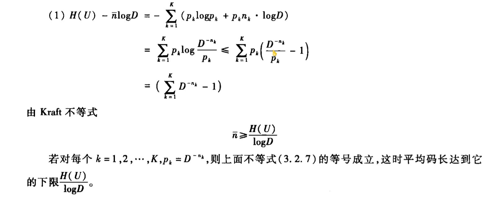
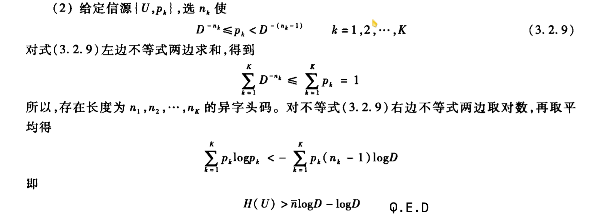
定理扩展：

-
唯一可译性
-
Sardinas & Petterson 判据（后缀分解）
一个码是唯一可译码的充分必要条件是除\(S_0\)外没有任何一个后缀分解集中包含码字

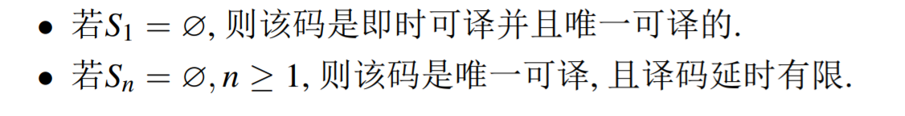
-
Kraft 不等式(异字头码)
\(\sum D^{-l_i} \leq 1\)
-
等长码时，等号成立
-
不等长码时，不等号成立
-
相当于所有码字都放在一棵D叉树的叶子上，树的深度为码字的最长长度，每一层只能选择一个分支
-
唯一可译码不一定是异字头码，但唯一可译码必定满足Kraft不等式
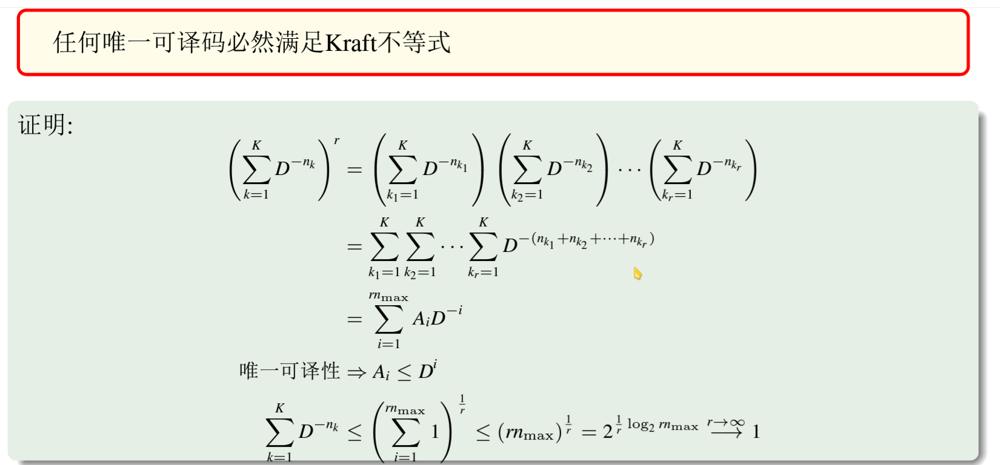
-
重要关系：唯一可译码 --> Kraft 不等式成立 --> 存在同样长度分布的异字头码
-
-
-
即时可译性
-
Huffman 编码（最优，略）
-
D 元
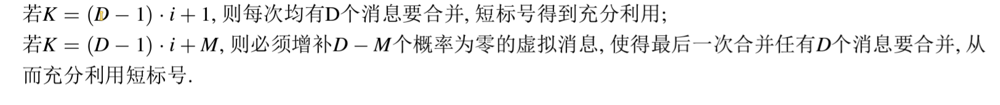
-
-
Shannon 编码

-
前缀码
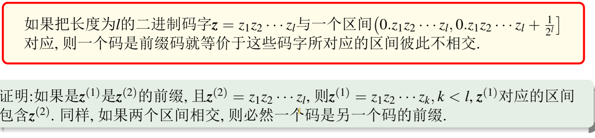
-
与 Huffman编码 相比，Shannon 编码逼近香农极限，但是收敛性能不如 Huffman 编码
-
-
Fano 编码
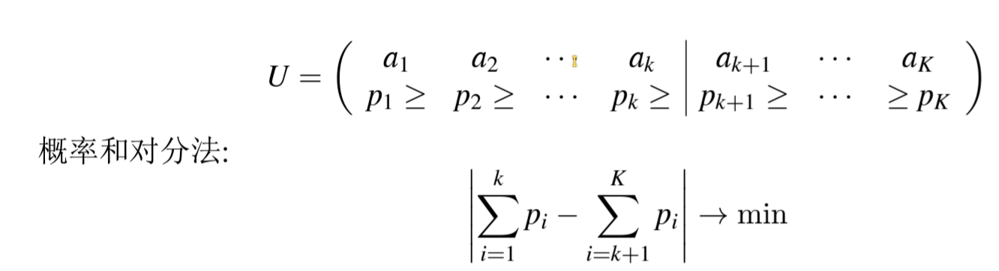
-
离散有记忆信源
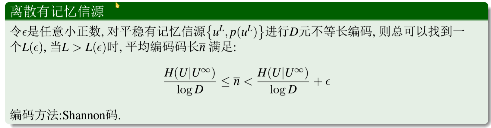
-
马尔可夫信源的编码
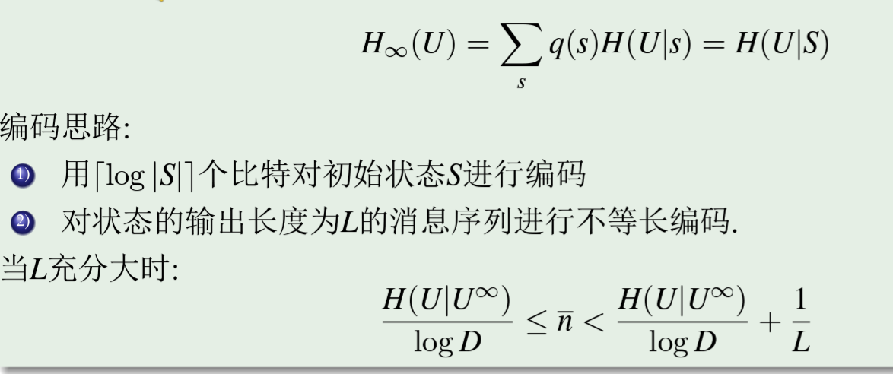
-
信道接收
在代价尽量小、尽量正确可靠地接收信号的意义上来最有效地传输一个信源（信道传输是概率性的）
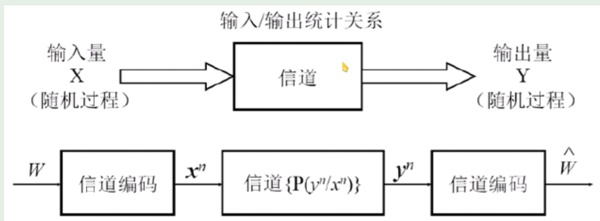
信道容量
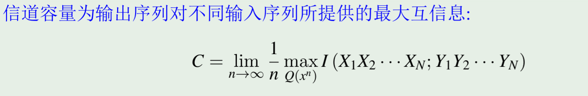
-
无记忆信源DMS
\[I(X_1,X_2,\cdots X_N;Y_1,Y_2,\cdots Y_N) \leq \sum_{i=1}^{N} I(X_i, Y_i)\]\(C = max I(X,Y)\)
-
平行信道（积信道）
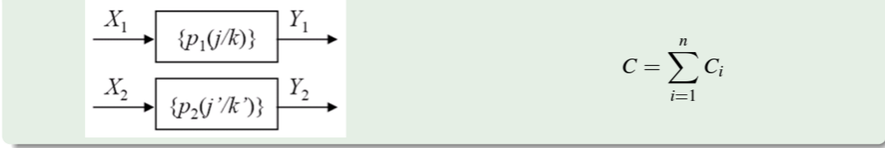
-
开关信道（和信道）
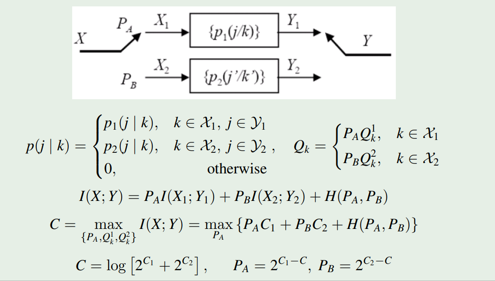
-
级联信道
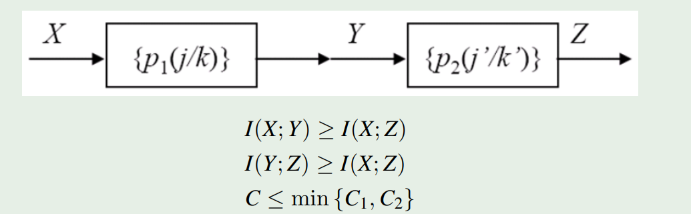
-
对称信道
-
输入对称：行置换
-
输出对称：列置换
-
准对称：按列划分得到的若干子信道是对称矩阵
-
香农信道编码定理
如果信息传输速率R小于信道容量C，则总存在一种编码方法，使信 息在该信道上无错误地可靠传输。
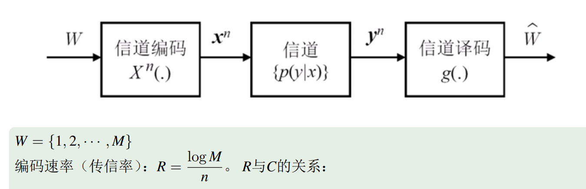
有损压缩
Quote

率失真理论
给定失真率的要求下，数据压缩技术的理论极限
注意信息的度量看的是信息的熵，即典型列个数，而不是符号数

-
Lloyds算法（效率不高）
假设用R个比特来表示信息，则相当于做信息区域上的\(2^R-means\)算法
失真度量函数：
香农给出的是其抽象形式，实际上可以是任意的度量函数
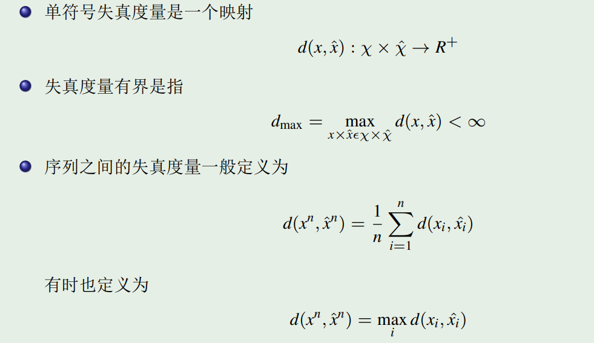
常见失真度量函数
-
Hamming失真
\[ D(x,\hat x) = \left\{ \begin{array}{ll} 0 & x = \hat x \\ 1 & x \neq \hat x \end{array} \right. \]此时失真率为错误率
\[ Ed(X,\hat X) = P(X \neq \hat X) \] -
平方误差失真
\[ D(x,\hat x) = (x-\hat x)^2 \]
-
失真的规范化
即每个符号取正确自身值时的失真为0
\[ C_x = \min_{\hat x} d(x,\hat x) = 0\]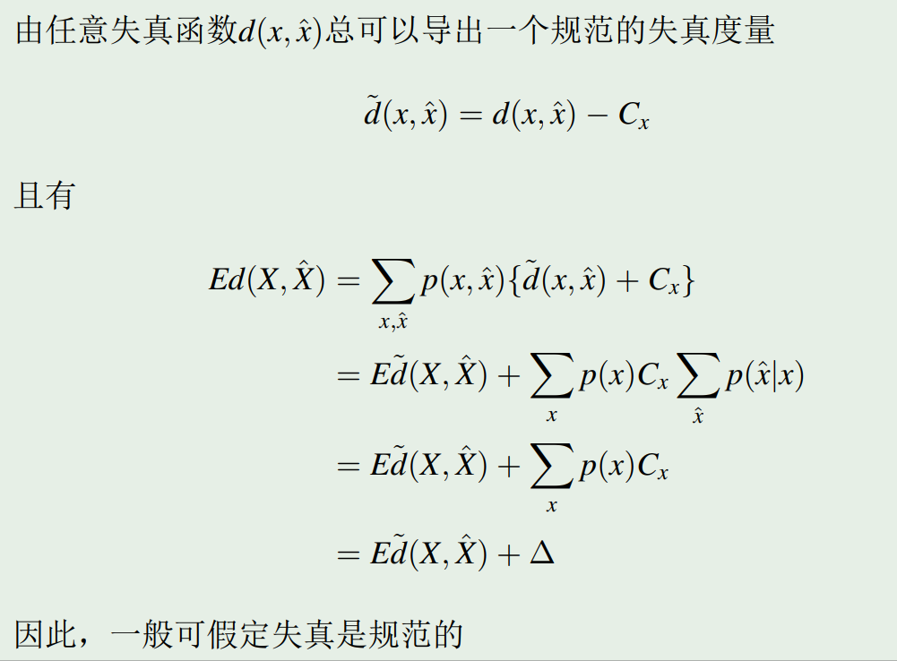
-
零比特编码
虽然比特速率为0, 但是不同的\(\hat x\)导致的失真率也是不同的，应有最小值
比如说对于一个高斯变量，取\(\hat x = 0\)时取到最小值\(D = \sigma ^ 2\)；否则若取\(\hat x \neq 0\)，容易证明\(D\)会变大
因此，零比特编码最小平均失真 就是 编码的最大失真

-
信息率失真函数
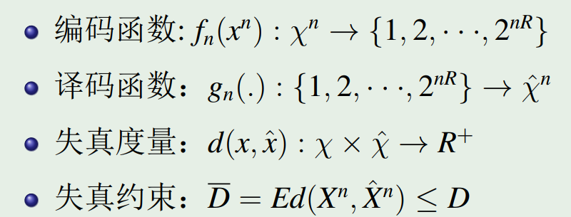
核心即是找到下方的这条 理论极限的曲线，右上方的点可达，左下方的点不可达
即 误差率确定，最小极限比特数；比特数确定，最小极限误差率
其中
-
率失真函数\(R(D)\)是失真率\(D\)的函数，表示在失真率\(D\)下的最小比特数
-
失真率函数\(D(R)\)是比特数\(R\)的函数，表示在比特数\(R\)下的最小失真率
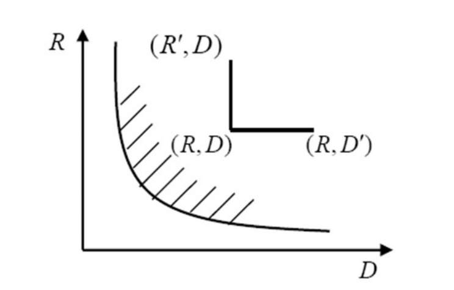
Quote
上面的定义本质上是将失真函数转化为了一个优化问题，但是比较复杂
在前面的基础上，定义 信息率失真函数
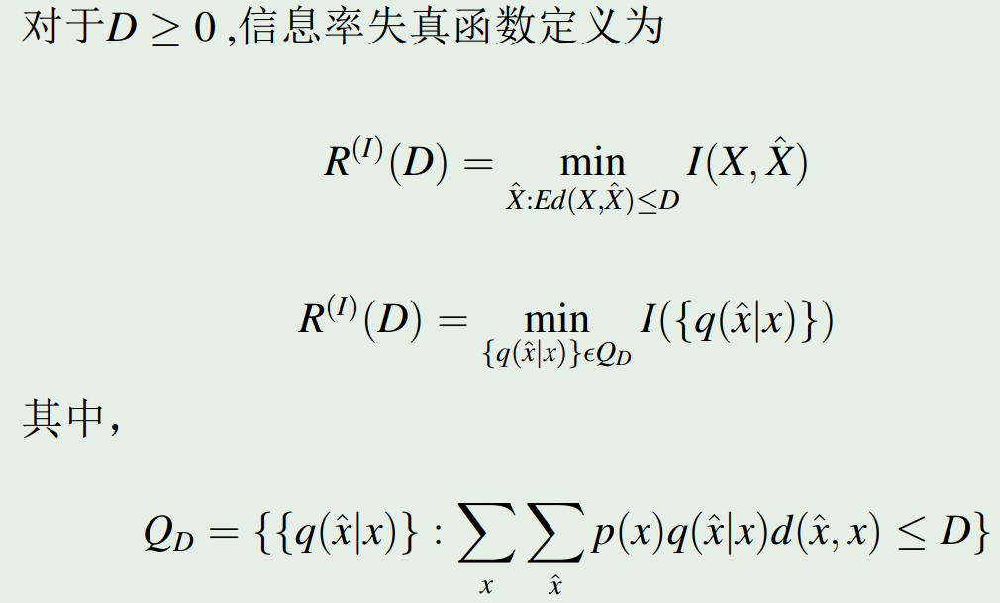
-
率失真信源编码定理
从而该函数的求解变成了一个类似信道容量计算的凸优化问题